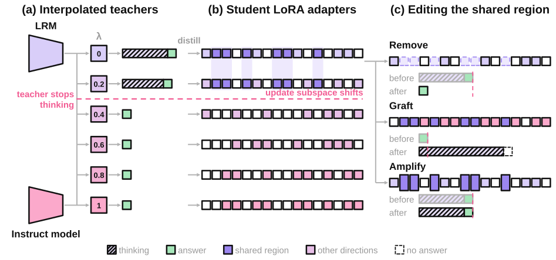
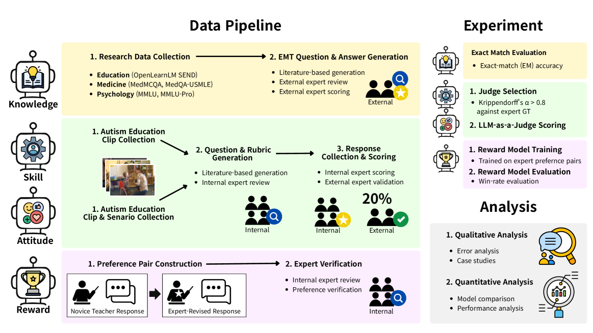
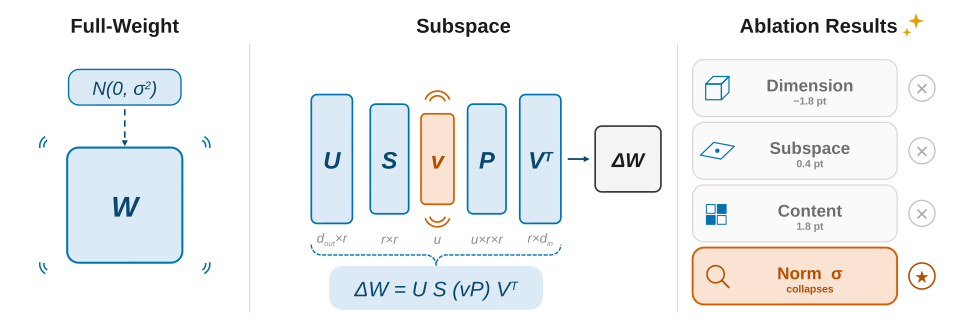
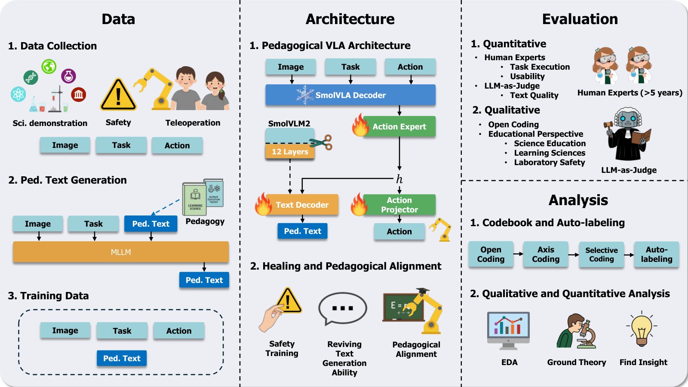

Research
I'm interested in model interpretability: where knowledge and behavior live inside a model, and how to read them out of its weights and activations.
This page contains a selection of papers I've worked on. I'll try to update it periodically. The full list is on Google Scholar.
Where Do Distilled Students Store Thinking?[arXiv]
arXiv 2026
Taeyeong Kim, Jaemin Jung, Ahhyun Kim, Unggi Lee

Recent work shortens a reasoning model's long solutions by interpolating it with a short-answer model. We ask what a distilled student's LoRA weights keep when the teacher stops thinking, and find a shared adapter subspace tied to thinking-like behavior. Removing that subspace largely turns the behavior off for every student and benchmark we test.
SpecialEduBench: Benchmarking Vision-Language Models on Knowledge, Skill, and Attitude in Language Intervention for Autistic Children[arXiv]
arXiv 2026
Jihoi Na, Taeyeong Kim, Sungjune Kong, Jaemin Jung, Min Joung Park, Kyungtae Joo, Ahhyun Kim, Shim Jaechang, Sooyoung Joo, Dongjin Ka, SeJoong Kim, Jimin Kim, HyunJin Jung, Unggi Lee

We build a benchmark that measures whether vision-language models can act as teachers in language intervention for autistic children, along knowledge, skill, and attitude. Seven special-education experts wrote, scored, and reviewed the items. Across eight frontier models no axis is saturated, and failures cluster where pressure is applied.
Not the Dimension, the Norm: What Matters in Gradient-Free Weight Perturbation of Language Models[arXiv]
arXiv 2026
Taeyeong Kim, Ahhyun Kim, TaeHyeon Kim, Unggi Lee

Gradient-free adaptation samples random weight perturbations and keeps the ones that score well. Changing one factor at a time, we find that perturbing only 12 to 16 scalars comes close to full-weight search, and that neither the dimension nor the choice of basis explains performance. What matters is the perturbation norm, whose safe range transfers across model scale and family.
Pedagogical Alignment for Vision-Language-Action Models: A Comprehensive Framework for Data, Architecture, and Evaluation in Education[arXiv]
arXiv 2026
Unggi Lee, Jahyun Jeong, Sunyoung Shin, Haeun Park, Jeongsu Moon, Youngchang Song, Jaechang Shim, JaeHwan Lee, Yunju Noh, Seungwon Choi, Ahhyun Kim, TaeHyeon Kim, Kyungtae Joo, Taeyeong Kim*, Gyeonggeon Lee
*Corresponding author

We adapt lightweight vision-language-action models for classroom science demonstrations by restoring their language generation, distilling pedagogical knowledge from an LLM, and adding safety training. Across five demonstrations in physics, chemistry, biology, and earth science, the framework matches baseline task performance while producing fitting educational explanations.